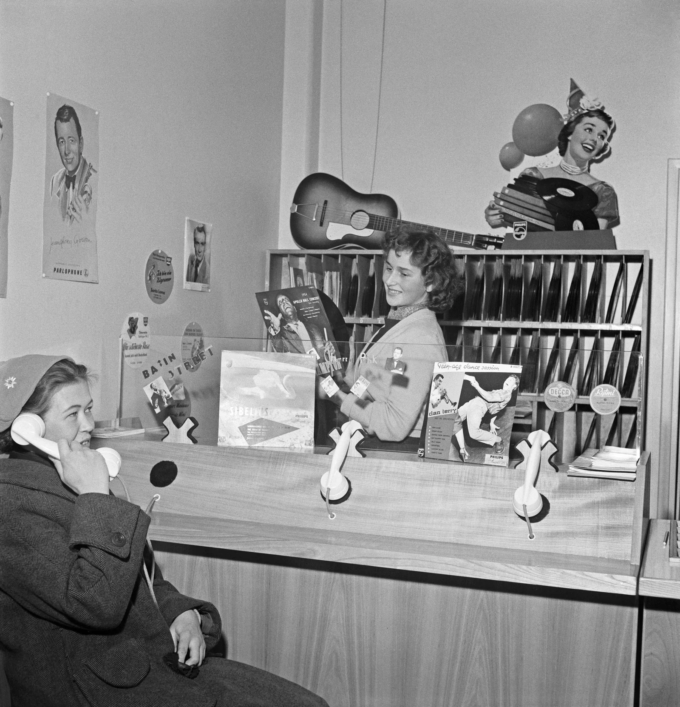
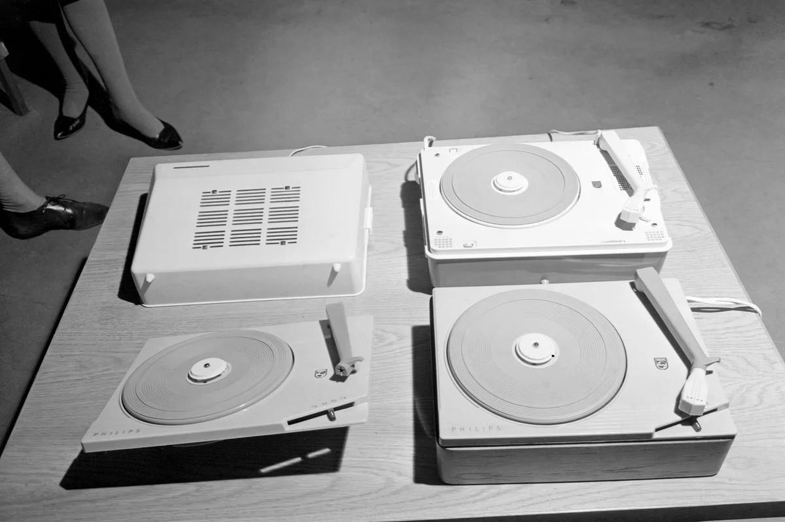
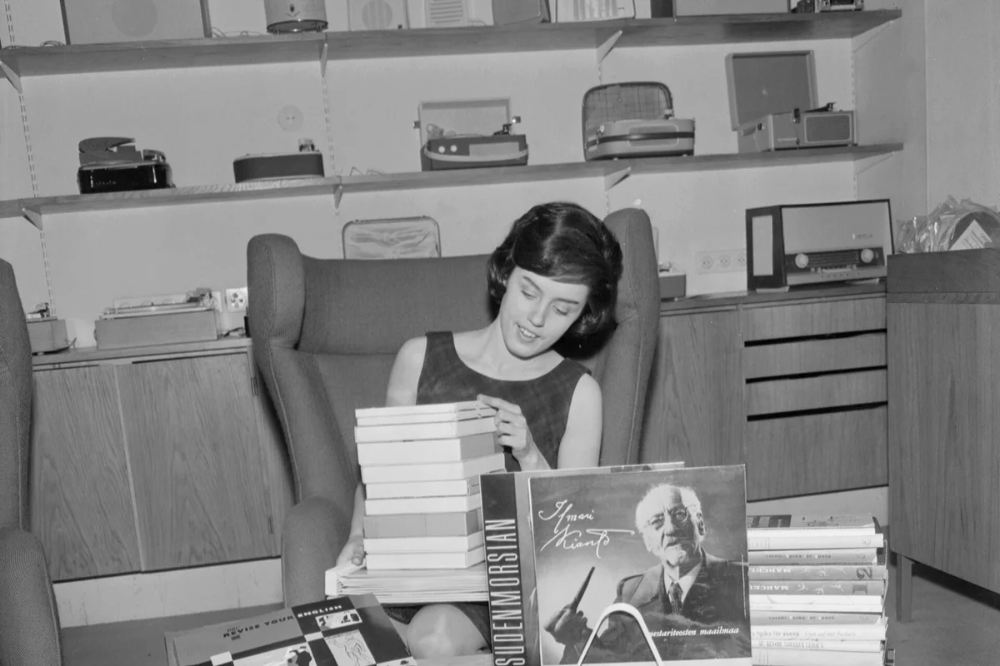
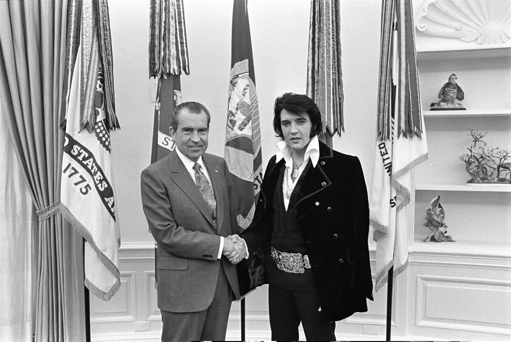

The mixtape that said it all
A blank cassette, a favorite song, and the patience to make something personal.
Read the storyMusic & memories - 1960s
The sleeve, the soft crackle, the song you played again. Remember listening with your whole attention?

There was a small ceremony to putting on a record. You slid the sleeve from the shelf, eased the disc out of its paper jacket, and held it carefully by the edges. Before a single note played, you had already made a choice: this was the sound of the afternoon.

Perhaps you stood for a while with two sleeves in your hands, trying to decide. One held a song you knew by heart; the other offered something you had almost forgotten. There was no wrong choice. You could leave the second one nearby, ready for later.
Album covers gave you something to study. There were photographs to look at, names to discover, and tiny lines of print that suddenly seemed worth reading. Sometimes you knew every mark on a favorite sleeve. Sometimes the cover stayed propped beside the player, as much a part of the room as the music.
You may remember a bent corner or a name written on the back. Perhaps someone had lent you that record, and seeing their handwriting was part of hearing it again. Even with the music playing, you could turn the cover over once more and find something to look at.
The moment before the song could be almost as memorable as the song itself. A little surface noise, a brief pause, and then an opening you recognized immediately. You might know exactly when the singing would start, or which track made someone in the family call out from the next room.

Perhaps you found yourself taking a breath just before that first line. Your hands might keep time on a chair arm without your noticing. If someone else knew the record as well as you did, you could exchange a look at the same small moment, with nothing to explain.
Not every musical memory is a grand occasion. It might be a parent washing the dishes, a friend sitting on the floor, or the feeling of spending your own money on something you could play again and again. A familiar song can make those ordinary scenes feel surprisingly close.
Try looking around the edges of the memory. Was the window open? Had somebody left a sweater on the chair? Perhaps the light had shifted by the time you got up. An afternoon you would never have thought to write down can return with its ordinary details still attached.
Which record would you put on first if you could spend one more afternoon in that room? Think of the cover, the first song, and the person you would want listening beside you.
Would you listen all the way through, or choose the side you always loved best? If someone comes to mind with that record, share the title with them. They may remember a different song from the same afternoon, or the reason you played that one again.
A blank cassette, a favorite song, and the patience to make something personal.
Read the story
One television, a favorite seat, and a theme tune that brought everyone into the room.
Read the story
20 photographs from sports and entertainment. Pick the year each photograph was taken. No timer.
Photograph of Richard M. Nixon and Elvis Presley at the White House, White House Photo Office, U.S. National Archives. Public domain. Changes: resized, converted to WebP.
Take the quiz← Back to Dear Old Days · All articles · About · Privacy policy · Photo credits · Cookie settings